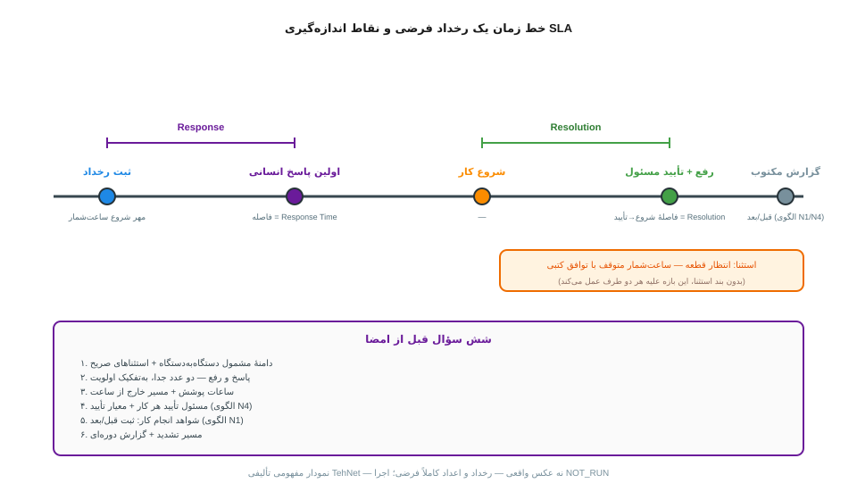

وضعیت درس: DRAFT / NOT_DEPLOYED — در انتظار مرور.
آموزش از سری پشتیبانی؛ مخاطب: مدیر کسبوکار و مدیر IT.
سناریوی کاملاً فرضی و آموزشی با دادهٔ ساختگی؛ هیچ پیمانکار/قیمت/پروژهٔ واقعیای در این درس نیست و هیچ اجرای واقعی NOT_RUN است.
نمودار مفهومی و تألیفی است (نه عکس واقعی).
دو پیشنهاد پشتیبانی وقتی قابلمقایسه میشوند که شش چیز صریح باشند: دامنهٔ سرویسها (چه چیزهایی مشمول است)، زمان اولین پاسخ و زمان رفع (دو عدد جدا، نه یک «ریسپانسیو» مبهم)، مسئول تأیید هر کار، استثناها (قطعی اینترنت ISP، تأمین قطعه، سختافزار مشتری)، شواهد انجام کار (ثبت قبل/بعد + گزارش) و مسیر تشدید وقتی کار جلو نمیرود. بدون اینها، هر دو پیشنهاد «پشتیبانی» خوانده میشوند ولی دو چیز کاملاً متفاوت را میفروشند.
| بند | مقدار فرضی آموزشی |
|---|---|
| سازمان | دفتر ۲۵ نفره + اتاق سرور کوچک (فرضی) |
| سرویسهای مشمول فرضی | شبکهٔ LAN، اینترنت دفتر، NAS، چاپگر شبکه |
| خارج از دامنه فرضی | سرور فیزیکی، Wi-Fi، نرمافزارهای کسبوکار |
| هدف درس | ساخت «برگهٔ سؤالات قبل از امضا» و «جدول مقایسهٔ ساختاریافته» دو پیشنهاد فرضی A/B |
پیشنهادهای A و B کاملاً ساختگی و فقط برای آموزش ساختار مقایسهاند؛ هیچ شباهتی به پیشنهاد واقعی هیچ شرکتی ادعا نمیشود.
| # | سؤال | چرا گران است اگر نباشد | خروجی قابلثبت |
|---|---|---|---|
| ۱ | دامنهٔ سرویس دقیقاً چیست؟ (دستگاهبهدستگاه یا «شبکه»؟) | «شبکه» میتواند یعنی فقط روتر | فهرست دستگاه/سرویس مشمول + استثناهای صریح |
| ۲ | زمان اولین پاسخ و زمان رفع چند است؟ (دو عدد جدا) | پاسخ فوری با رفع هفتهای بعد، هم SLA خوانده میشود | دو عدد بهتفکیک اولویت (بحرانی/عادی) |
| ۳ | ساعات پوشش چیست؟ (کاری/24-7/تعطیلات) | رخداد جمعهشب، دوشنبه صبح حساب میشود | جدول ساعتها + مسیر تماس خارج از ساعت |
| ۴ | مسئول تأیید اتمام هر کار کیست؟ | «تمام شد» بدون تأیید کارفرما قابلچالش است | نام/نقش تأییدکننده + معیار تأیید (الگوی N4) |
| ۵ | استثناها چیست؟ (ISP، تأمین قطعه، سختافزار مشتری) | بدون استثنا، SLA برای چیزی که کنترل ندارید تعهد میشود | فهرست استثنا + رفتار در استثنا (اطلاعرسانی/توقف ساعت) |
| ۶ | شواهد انجام کار چیست؟ | «بررسی شد» بدون خروجی قابلررسی نیست | الگوی N1/N4: ثبت قبل/بعد + دستورهای اجراشده |
| عبارت مبهم | نسخهٔ سنجشپذیر | نحوهٔ اندازهگیری |
|---|---|---|
| «پاسخگوییم» | «اولین پاسخ غیرخودکار حداکثر 2 ساعت کاری از ثبت رخداد» | مهر زمان ثبت تا مهر زمان اولین پاسخ انسانی |
| «سریع رفع میکنیم» | «رفع حداکثر 8 ساعت کاری برای رخداد بحرانی» (بحرانی=کل دفتر قطع) | تعریف بحرانی از قبل نوشته شود |
| «پشتیبانی دورهای داریم» | «یک بازدید/بررسی دورهای ماهانه با گزارش مکتوب» | گزارش ماهانه با چکلیست (الگوی N2) |
| «در دسترس بودن شبکه» | عددی فقط با مانیتور قابلادعا است | بدون مانیتور (N2) هیچ SLA در دسترس بودن قابلسنجش نیست — UNKNOWN برای مبنا بدون ابزار |
نمودار زیر توالی یک رخداد و نقاط اندازهگیری SLA را نشان میدهد.

شرح متنی نمودار (جایگزین تصویر برای دسترسپذیری): خط زمان از چپ به راست: «ثبت رخداد» (مهر شروع) → «اولین پاسخ انسانی» (فاصله = Response Time) → «شروع کار» → «رفع و تأیید مسئول» (فاصلهٔ شروع تا تأیید = Resolution Time) → «گزارش مکتوب». زیر خط، بازههای استثنا با رنگ متفاوت (مثلاً انتظار قطعه — ساعتشمار متوقف با توافق). برچسب «تألیفی/مفهومی».
| بند سنجش | پیشنهاد A (فرضی) | پیشنهاد B (فرضی) |
|---|---|---|
| دامنه: دستگاه/سرویس مشمول | ||
| پاسخ بحرانی/عادی (ساعت کاری) | ||
| رفع بحرانی/عادی (ساعت کاری) | ||
| ساعات پوشش + مسیر خارجساعت | ||
| استثناها (ISP/قطعه/سختافزار) | ||
| شواهد انجام کار (قبل/بعد) | ||
| مسیر تشدید + نام مسئول | ||
| گزارش دورهای |
قاعده: تا هر دو ستون پر نشوند، «ارزانتر/بهتر» معنا ندارد.
| خطا | چرا گران است | درست |
|---|---|---|
| مقایسهٔ فقط قیمت | SLA بیعدد و بیدامنه با نصف قیمت، سرویس متفاوتی است | جدول ساختاریافتهٔ بالا پر شود |
| اشتباه Response با Resolution | «پاسخ در 15دقیقه» یعنی رفع نیست | دو عدد جدا بخواهید |
| SLA برای وابستگی خارج از کنترل | قطعی ISP یا تأمین قطعه، ساعتشمار را منصفانه نمیبندد | استثناها صریح + رفتار هنگام استثنا |
| «ریسپانسیو بودن» بدون ثبت | بدون مهر زمان و لاگ، هیچ ادعایی قابلاثبات نیست | ثبت رخداد (الگوی N1) شرط است |
| نبود مسئول تأیید | پایان کار جدلبرانگیز میشود | تأییدکننده + معیار (الگوی N4) |
| پیوند | مقصد |
|---|---|
| درسهای مرتبط | N1 · N4 · N2 |
| نقشهٔ کامل سری | topic map |
| پشتیبانی شبکهٔ سازمان شما | خدمات پشتیبانی شبکهٔ تهران |
| درس بعدی سری | N5 — backup و export پیکربندی MikroTik (تولید در نوبت بعدی؛ فعلاً فقط در topic map) |